PBX (Private Branch Exchange) es una central telefónica privada que administra extensiones y enruta llamadas
internas y externas. Una solución PBX puede ofrecer transferencia, colas, buzón de voz y menús IVR; Asterisk
es una de las plataformas de software que puede utilizarse para construirla.
Características principales de PBX:
Enrutamiento de llamadas
Enrutamiento de llamadas: dirige llamadas entre extensiones, troncales y destinos segn el
plan de marcacion.
Servicios de telefonía
Servicios de telefonia: puede ofrecer transferencia, grupos de timbrado, colas, IVR y buzon
de voz.
Integración de dispositivos
Integración de dispositivos: conecta telefonos IP y softphones con troncales SIP u otras
pasarelas configuradas.
Protocolos y tecnologías habituales:
SIP para señalización de llamadas en sistemas
compatibles.
RTP para transportar audio; SRTP puede proteger
medios si los extremos lo soportan.
IAX2 en despliegues Asterisk que lo utilicen.
SIP trunk o pasarela de telefonía para comunicar con
redes externas, según proveedor.
Ventajas de usar PBX:
Centraliza extensiones y reglas de llamadas para una
organización.
Permite funciones como colas, IVR, grupos de timbrado
y buzón de voz.
Puede integrarse con teléfonos IP, softphones y
troncales compatibles.
Las plataformas de software permiten adaptar el plan
de marcación al negocio.
Puede escalarse por etapas, con planificación de
capacidad y seguridad.
Desventajas de usar PBX:
La calidad de voz depende de latencia, pérdida de
paquetes y configuración de red.
Conectar la central a redes externas requiere
controlar accesos y proteger credenciales.
La operación y continuidad requieren respaldo,
monitoreo y conocimientos de telefonía IP.
Funcionamiento de PBX:
Una PBX registra extensiones y procesa llamadas de acuerdo con un plan de marcación. Al originarse una
llamada, la central valida el destino y decide si la conecta a otra extensión o a una troncal; RTP
transporta el audio entre los extremos. La administración incluye teléfonos, rutas, permisos, horarios,
códecs, seguridad de señalización y registros. Los detalles dependen del software y del proveedor de
telefonía.
Casos de uso y escenarios recomendados:
Comunicaciones internas y externas
Una PBX es ideal para empresas con varias extensiones, centros de atención, sucursales
o personal móvil. Permite centralizar llamadas internas, transferencias, grabación y
rutas
hacia proveedores de telefonía para atender llamadas externas de forma controlada.
Automatización y atención
Tiene mucho valor en servicios de atención al cliente, recepción, call center o equipos
distribuidos. Con IVR, colas y rutas por horarios, la solución mejora la experiencia de
los
usuarios y ayuda a controlar la carga operativa del negocio.
Información técnica útil
Aspecto
Detalle
Puertos principales
5060/TCP y 5061/TCP para SIP; RTP suele ocupar rangos dinámicos como 10000-20000 y puede
configurarse en un rango específico.
Requisitos comunes
Servidor con buena calidad de red, CPU y RAM suficientes para la cantidad de
extensiones, además de troncales SIP o línea analógica según el proveedor.
Protocolos del servicio
SIP para señalización, RTP para audio, SRTP cuando se requiere cifrado y codecs como
G.711, G.729 o Opus según configuración.
Casos típicos
Empresas, recibe llamadas, call center, sucursales, atención al cliente y extensiones
internas con transferencia o colas de espera.
Consideraciones
Se requiere QoS, ancho de banda suficiente y planificación de seguridad para proteger la
central y evitar saturación de la red.
Atencion:Puedes descargar la ISO de Ubuntu Server 24.0.4
Aqui
Nota: Usa el usuario: Archivos, contraseña: Archivo_1234 y carpeta:
Archivos
Preparación de la máquina virtual
Para la instalacion de nuestro PBX, sera necesaria actualizar nuesto SO.
sudo apt update
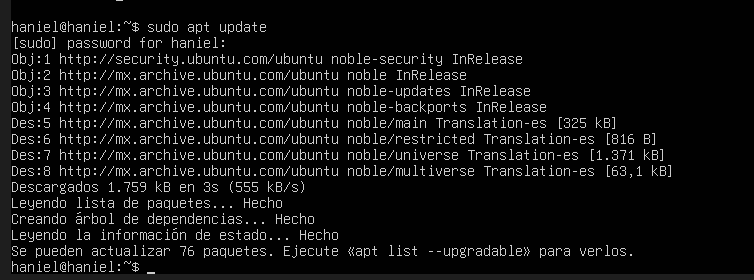
Ahora aplicar esas actualizaciones
sudo apt upgrade -y
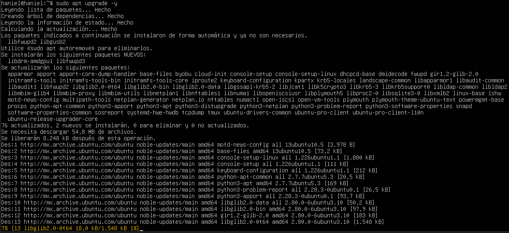
Pedira seleccionar el idioma del teclado, por lo cual seleccionar el idioma deseado.
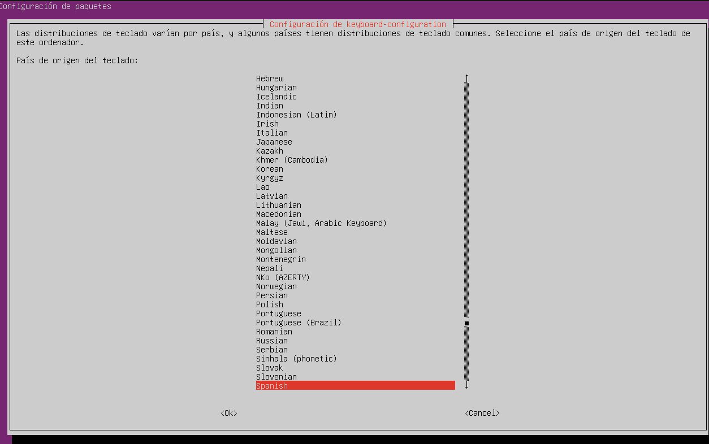
Ahora se instala asterisk, con el comando vamos a crear nuestro servicio de asterisk, el usuario del
sistema asterisk y la carpeta de configuración /etc/Asterisk..
sudo apt install Asterisk -y
Asterisk: Asterisk es un programa de software libre y de código abierto (bajo
licencia GPL) que permite convertir un ordenador o un servidor común en una central telefónica
privada o PBX
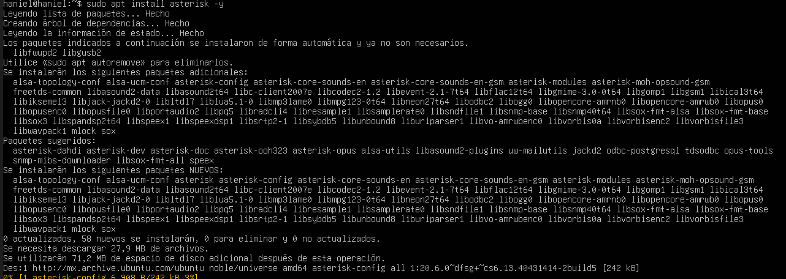
Una vez instalado Asterisk, lo vamos a configurar para que inicie cada que prendamos la maquina.
sudo systemctl enable --now Asterisk
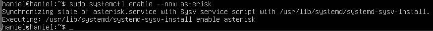
Revisaremos que nuestro servicio este levantado.
sudo systemctl status Asterisk
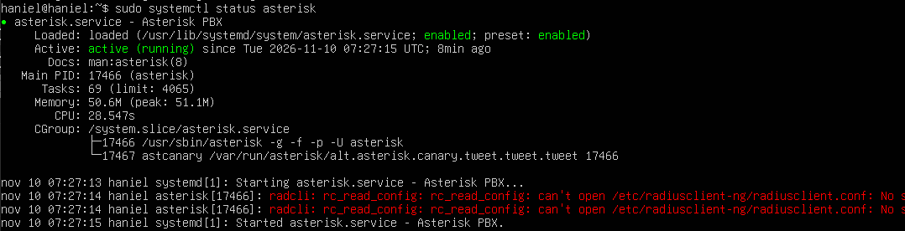
Ahora vamos a crear las extensiones (pjsip.conf), con este archivo vamos a definir quién se va a
poder conectar a nuestro PBX. Las colocaremos tal cual este en la captura, una vez con 1001
y otra
vez abajo la misma configuracion pero con 1002.
sudo nano /etc/asterisk/pjsip.conf
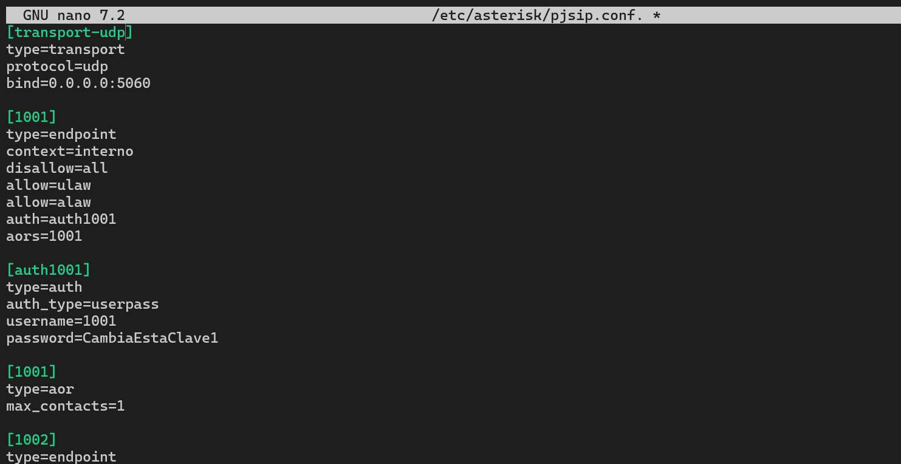
Ahora vamos a crear las reglas de llamada (extensions.conf), gracias a este archivo que es el
dialplan, que nos va a definir qué pasa cuando alguien marca un número, se colocara la informacion
tal cual en el archivo /etc/asterisk/extensions.conf
sudo nano /etc/asterisk/extensions.conf
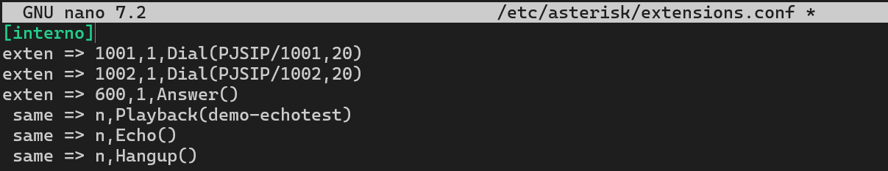
Una vez hayamos configurado las extensiones vamos a reiniciar nuestro servicio de Asterisk.
sudo systemctl restart Asterisk
Por ultimo entraremos a la consola de Asterisk con este comando.
sudo asterisk -rvvv
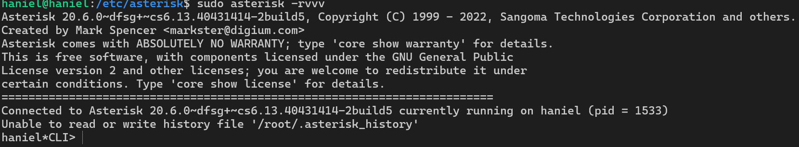
Dentro de la consola colocaremos un comando que lista nuestras extensiones y si están conectadas
(Unavailable significa que aún no se registró ningún teléfono).
pjsip show endpoints
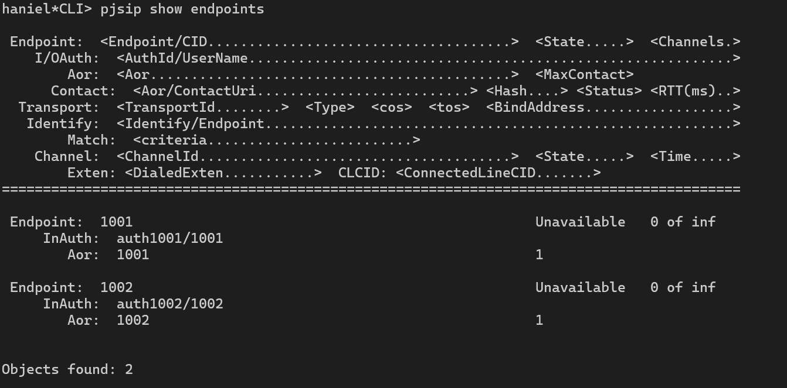
Tambien colocaremos otro comando para ver el dialplan cargado y podemos salir con el comando "exit".
pjsip show endpoints
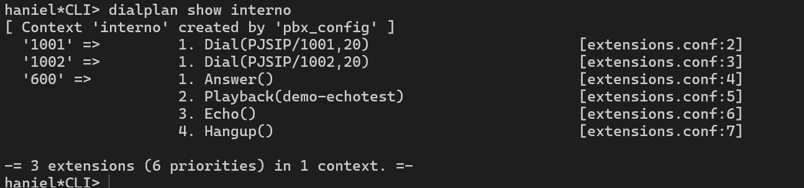
Asi estarian ambos en funcionamiento.
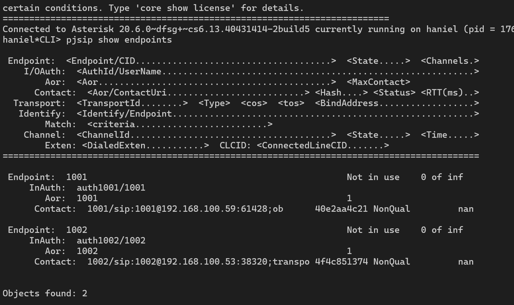
Ahora con una aplicacion en diferentes dispositivos, podremos realizar llamadas entre ellos,
colocando el usuario y la ip
los usuarios siendo 1007 y 1002.
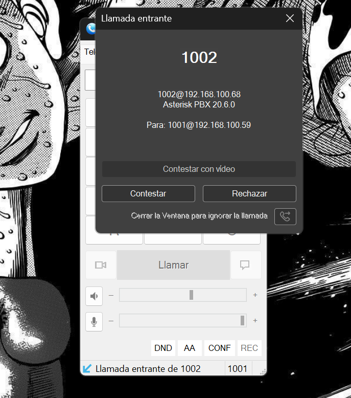
Conclusión sobre PBX:
Una PBX organiza las comunicaciones de voz mediante extensiones, reglas de enrutamiento y conexiones
externas. Una solución basada en software como Asterisk permite personalizar esas funciones, pero
requiere controlar el acceso, proteger la señalización y validar la calidad de red antes de prestar
servicio.